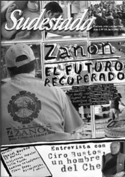

Buscar
Zanon: el futuro recuperado (Fasinpat)
Seis años atrás, una historia comenzó a escribirse en la soledad del sur patagónico. Una fábrica ceramista fue el escenario de un desafío, de un combate, de una apuesta de cientos de trabajadores. Ellos se juntaron y decidieron tomar el futuro en sus manos, sin depender ya de la fuerza o debilidad de sus patrones. Y su lucha se hizo ejemplo. Hoy el trabajo crece, el desafío se multiplica y los trabajadores hacen su balance. Enviados especiales a Neuquén: Agustín Comas y Jaime Galeano Fotos: Ana Sofía Quintana, Cecilia Maletti, Agustín Comas y Prensa Zanon
Edición N° 60
Julio 2007
Revista bimensual
Comprar edición impresaSumario
- Zanon: el futuro recuperado (Fasinpat)
- La amenaza
- Daniel Moyano (2º parte)
- Ciro Bustos: un hombre del Che
- Latinoamérica: continente adentro
- Spyro Gyra: 30 años de jazz
- Biblioteca Bella Vista
Compartir Articulo
1.- La noche fría y sureña, profunda y estrellada todavía no quiere marcharse, en medio de ella, a las 6 de la mañana se comienza a formar una larga columna de obreros, van descendiendo de los colectivos que los acercan hasta el portón de entrada, en su mayoría son hombres, pero algunas mujeres también se ven, son cientos. Detrás de los colectivos, a un costado de una ruta que atraviesa un paisaje árido se levanta un cartel, no es gigante como sí lo es la fabrica que debe enfrentar la vista de los obreros que envueltos en sus gorras y bufandas se protegen del clima patagónico. "FASINPAT, FABRICA SIN PATRONES" se lee bien claro en letras negras, y para no dejar dudas de que en ese lugar ya no hay jefes más abajo sigue la declaración: "Zanon, Bajo Control Obrero". Desde el puesto de seguridad se abre automáticamente el gran portón blanco, los primeros pasos de los obreros, lentos y armoniosos, se adueñan del lema del cartel, y al buscar sus tarjetas, marcarlas y colocarlas en su casillero correspondiente, lo siguen reafirmando. En silencio, saludan con sus manos a sus compañeros y a los encargados de seguridad. Al abandonar la entrada el gigante los enfrenta, los desafía, como cada mañana, y ellos con su tarjeta ya marcada, con su bolso sobre sus espaldas lo respetan, pero parecen no temerle, si hay algo que no se ve en las miradas de esos trabajadores es el miedo.
Entre ese lento inicio de la jornada, se van acomodando, los buscamos en sus puestos de trabajo, nos adentramos en el corazón de esos enormes galpones que parecen ocupar manzanas y manzanas de la localidad de Centenario en la capital Neuquina. El centro de una gestión obrera sin jefes ni autoridades, se expande a través de enormes maquinas que se guían automáticamente, pero que necesitan el control permanente de sus operarios. Gastón, en el sector porcellanato enseguida ofrece unos mates mientras su mirada no pierde la línea por donde pasan cientos de cerámicos. Su voz se hace fuerte, para tapar el constante ruido que nos rodea, y nos contesta sin dudar cuando le preguntamos sobre como es esto de trabajar sin patrones, "una ventaja inestimable" nos dice "casi no negociable ni siquiera por plata". Y enseguida se acerca Pablo, un compañero del sector y juntos se marchan a arreglar una maquina que se encuentra trabada. Y mientras recorremos entre mates y mates ofrecidos en cada sector donde paramos para charlar, el polvo en el aire y en el suelo va dejando las huellas de los pasos de los obreros, Marcos tomando una cerámica recién salida de la prensa, la mide y explica el espesor que debe tener y la arroja a una carretilla, de fondo la prensa sigue golpeando con toda su fuerza la mezcla recién salida de los atomizadores, formando "los bizcochos" que pasaran por los hornos que hornean las cerámicas que pasan por minuto por frente a los ojos de los trabajadores, montadas sobre grandes líneas tomando curvas y rectas, subiendo y bajando, pasando por el esmaltado, antes de ingresar a los hornos donde se las termina de hornear, para pasar nuevamente ante la atenta mirada del equipo de selección que, fibra en mano, se encargaran de hacer la selección final.
2.- Una historia, una toma, una defensa.
El mate hace de compañero a los obreros, entre risas y cigarrillos, sentados en sus puestos de trabajo no dejan de ofrecer sus historias personales en el conflicto. Sus ojos brillan al recordar cada viejo dato que parecía quedar en el olvido. Al momento de quedar en la calle pasaron angustiosos meses de espera y carpa en la puerta de la fábrica que permanecía cerrada. Los gerentes de la empresa se habían marchado por la ruta 7 que pasa por la puerta de la fábrica, a partir de la huelga iniciada en agosto de 2001 debido los salarios que se les adeudaban a los trabajadores. El stock de cerámicas para vender que había otorgado una jueza neuquina a favor de los trabajadores se estaba agotando. Paco, actual coordinador general de producción de la planta sorprende cuando relata que fue el mismo gobierno el que los habilitó. "Claro, ustedes dirán: pero si el gobierno nunca los recibió" y enseguida arremete encadenando una serie de hechos que parecen darle la razón. "Cuando la jueza determinó que el 40 % del stock que había quedado en la planta de la patronal se vendieran para cobrar los sueldos atrasados, con esa resolución nos dijo: ´Sí, muchachos esos 40 mil metros ya se los vamos a colocar en el Eassy o en otro lugar de las empresas que hacen trabajo para el Estado´. Si hubiera ocurrido eso, acá no quedaba ni el loro. Te soy sincero, porque todos esperamos a cobrar el dinero de los 40 mil metros y nos íbamos. Todos juntos. El gobierno nos mintió una, dos, cuatro, y seis semanas hasta que vimos que nos verseaba y empezamos a venderlo nosotros porque estábamos muertos. No había un mango para llevar si quiera un litro de leche para la criatura de la casa. La desesperación hizo que empezáramos a venderla a la gente que pasaba por la ruta, dijimos pongamos un cartel ahí afuera, y así empezamos, y nos dimos cuenta que podíamos, y cuando nos dimos cuenta que podíamos, dijimos y si nosotros podemos producir, si nosotros hacíamos el trabajo siempre, Zanon no hacía nada, no lo hacían los jefes ni nada, lo hacíamos nosotros, todo nosotros. ¿Te das cuenta? Si ellos hubieran vendido el material…. Se terminaba. Por eso digo que ellos nos habilitaron", evalúa Paco, aspira de su cigarrillo, y se le escapa una sonrisa buscando a algún cómplice de su reflexión...
La nota completa en la edición gráfica de Sudestada nº60 - Julio de 2007
Comentarios
Jaime Galeano
Agustín Comas
Articulos más vistos


LIBRERÍA SUDESTADA

Colección infantil

Distribuidora de Libros

Suscripción

Sudestada en URUGUAY

Otros articulos de esta edición
Biblioteca Bella Vista
A fines de los 80, Susana Fiorito y Andrés Rivera compraron un depósito de forrajes donde, junto a otros militantes, ...
Ciro Bustos: un hombre del Che
Cuarenta años después de la caída en combate de su jefe, Ciro Bustos rompe el silencio en una entrevista exclusiva ...
Spyro Gyra: 30 años de jazz
Exponente del "jazz pop fusión" y precursor del estilo smooth jazz, el legendario grupo Spyro Gyra lanzó su primer disco ...
Daniel Moyano (2º parte)
El exilio provocó en Daniel Moyano un cambio de escenario geográfico personal, pero no desde su literatura, que siempre tuvo ...
Latinoamérica: continente adentro
Escenario de silencios y de luchas, América Latina sigue ofreciendo al tiempo un paisaje repetido de pueblos de pie y, ...
La amenaza
Existe el riesgo de caer en lugares comunes, de repetirse. Incluso, el peligro de confundir la palabra de uno con ...